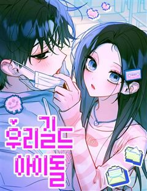
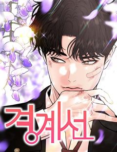

첫사랑·짝사랑 웹툰 추천 TOP 30
첫사랑, 짝사랑, 짝사랑남, 짝사랑녀, 소꿉친구 같은 태그가 붙은 작품을 모았어요. 네이버웹툰·카카오웹툰·레진코믹스에서 조건에 맞는 작품 139개 중 인기 순으로 30개를 골랐어요. 인기 TOP 3: 작전명 순정, 세기말 풋사과 보습학원, 육아일기
2026-10-06 기준 · 성인 작품 제외
내 취향으로 더 좁혀서 추천받기 →-
1
 네이버웹툰
네이버웹툰작전명 순정
내 남자친구와 절친의 키스를 목격했다. 그것도 하필이면 재수 없는 같은 반 남자애 '고은혁'과 함께. 안 그래도 혼란스러운데.. 사람마다 평생 받을 사랑의 양이 정해져있다고?? 심지어 내가 받을 수 있는 사랑의 양은 '0'??? 알거지 운명을 바꿔보려는 수애와, 그런 수애에게 말려든…
친구>연인혐관청춘사연남나쁜남자네이버웹툰에서 보기 → -
2
 네이버웹툰
네이버웹툰세기말 풋사과 보습학원
어릴 때 알던 재수없던 놈이 더 재수없는 놈이 되어 돌아왔다! 중3 황미애의 옆 빌라에 어릴 때 잠깐 시골에서 봤던 김철이 이사 와 같은 학교 같은 반이 되고 '철이와 미애'라 놀림 받자 김철은 미애를 불쾌해하며 피한다. 너만 불쾌한 줄 알아? 나쁜 놈! 미애는 속이 상하지만 그럼에도…
친구>연인설렘폭발청춘무심남능글남네이버웹툰에서 보기 → -
3
 네이버웹툰
네이버웹툰육아일기
이젠 갠플이 아니라 팀플이다! 조별 과제와 차원이 다른 인생을 건 팀플이 시작된다. 1인가구에서 2인가구로 2인가구에서 3인 가구로 인생 난이도가 급격히 상승한 자까 작가의 일상 이야기
친구>연인컷툰공감결혼생활연애/결혼공감네이버웹툰에서 보기 → -
4
 네이버웹툰
네이버웹툰사내연애 사절!
첫사랑 별거 있나. 어른이 되어 첫사랑을 다시 만난다면, 과연 우리는 여전히 설렐까? 첫사랑에서 친구로, 친구에서 동료로, 역행하는 관계 속에서 솔직한 내 마음은 '사내연애 사절!' <유일무이 로맨스> 두부 X <바른연애 길잡이> 남수 작가의 만남! 로맨스 장인들의 믿고 보는 오피스…
첫사랑친구>연인리얼로맨스다정녀로맨틱코미디네이버웹툰에서 보기 → -
5
 네이버웹툰
네이버웹툰벙커의 낮
어릴 적 벙커에 데려간 ‘원혁’을 내친 ‘서우’. 이후 고등학생이 된 서우는 고립된 삶에 극단적인 시도를 하던 중, 또 다른 벙커를 발견하고 들어간다. 그러나 피 칠갑인 채 들어온 ‘원혁’에 의해 갇히게 되는데...
첫사랑순애남감성적인자극적인계략남네이버웹툰에서 보기 → -
6
 네이버웹툰
네이버웹툰해시태그는 첫사랑
사람들의 진심이 ‘해시태그’로 보이게 된 전교 1등 연이솔. 그런데 첫사랑 성신우가 자신에게 ‘#첫사랑이었던_쓰레기’라는 태그를 달았다?! 이유도 모른 채 버림받았던 상처가 되살아나고, 이솔은 신우를 싫어하는 백설과 손잡는다. 복수일까, 미련일까. 이번엔 누가 먼저 상처받을까?
첫사랑짝사랑소꿉친구사연남능력녀네이버웹툰에서 보기 → -
7
 네이버웹툰
네이버웹툰하는 사이
모두의 태양이자 주목받는 존재인 강시화, 그런 시화와 특별한 소꿉 친구 사이로 주변의 질투를 받던 이은서. 어느 날 홀연히 사라졌던 시화가 몇 년이 흘러 돌아왔다. 자꾸 흔들리는 은서의 마음과 도저히 짐작할 수 없는 시화의 행동. 우리는 특별한 사이잖아? 너도 그렇게 생각하지? 하지만…
짝사랑녀친구>연인리얼로맨스자극적인설렘폭발네이버웹툰에서 보기 → -
8
 네이버웹툰
네이버웹툰양아치의 첫사랑
‘그 시절, 내가 좋아한 양아치 남자애도 날 좋아했었다.’ 도래는 대학에서 5년 만에 첫사랑 해원을 마주친다. 그리고 뒤늦은 고백을 받는데.. 기쁜 마음보다는 당황스럽기만 하다. 그에게는 여자친구가 있었기에! 제정신 아닌 그의 5년 만의 고백. 과연 이 감정은 여전히 유효한 것일까?
첫사랑순애남2025 연재직행열차설렘폭발소심녀네이버웹툰에서 보기 → -
9

네이버웹툰우리 길드 아이돌
남동생의 계정으로 게임을 즐기던 '아진'. 길드를 위해 여성유저 [꽃뿌링]에게 접근했다가 여미새로 찍혀버린다. 나 사실 여자인데...! 한편 정체를 숨기고 [꽃뿌링]으로 활동 중인 '지현'은 아진이 보내온 영상 속 목소리가 낯설지 않다고 느끼는데...
첫사랑설렘폭발게임청춘사연남네이버웹툰에서 보기 → -
10
 카카오웹툰
카카오웹툰집착 시리즈
소꿉친구 유한과 수아, 그리고 그들의 형제 지한과 신우. 어릴 때부터 함께해 온 네 사람의 관계는 평범한 우정과는 어딘가 다르다. 모두의 관심을 한몸에 받는 수아의 눈에는 오직 유한뿐. 그런 수아를 좋아하는 일진이 유한을 괴롭히기 시작하는데... 과연 수아는 바라던 대로 유한을 온전히…
소꿉친구집착물카카오웹툰에서 보기 → -
11

-
12
 네이버웹툰
네이버웹툰용한소녀
열여덟살이 결혼은 무슨 결혼이야! 정략결혼을 피해 용궁에서 지상으로 도망친 용왕의 딸 김용만은 성공을 목표로 전교 1등의 꿈을 품고 고등학교에 입학한다. 그런데 용만의 옆자리인 전교 1등, 심해수는 라이벌의 등장이 달갑지 않은 듯한데... 공부만 하기에도 바쁜 두 사람이 어째서인지 자…
짝사랑무해한러블리동아리다정남네이버웹툰에서 보기 → -
13
 네이버웹툰
네이버웹툰좋아하면 멍청해진다
차갑고 시크한 철벽녀 세린과 평범한 대학생 진형. 남들 앞에선 멀쩡한 두 사람이지만 함께 있으면 바보가 된다.
짝사랑러브코미디일상개그힐링소심남공식미녀네이버웹툰에서 보기 → -
14
 네이버웹툰
네이버웹툰빌런의 순정
비서인 연우는 부사장 윤석의 가스라이팅과 괴롭힘에 고향인 목산군으로 도망간다. 그곳에서 설양 건설의 전무 성헌을 만나게 되고, 얼음장 같던 성헌의 마음은 따스한 봄과 닮은 연우에게 녹아 스며든다. 한편 윤석은 연우를 찾으러 나서는데...
첫사랑능력남재벌남집착남사연녀네이버웹툰에서 보기 → -
15
 네이버웹툰
네이버웹툰축구천재로 오해받는 중입니다
이탈리아 명문 유스에서 방출당한 한국인 소년 ‘이지안’은 도망치듯이 도착한 ‘AC 피렌체’ 유스에서도 후보로 지내며 허송세월을 보낸다. 평소처럼 소꿉친구인 ‘김지우’에게 자신이 천재라며 허세를 부리는데 지우가 이탈리아로 유학을 온다는 충격적인 소식을 접한다. 소중한 친구(?)인 지우를…
첫사랑축구스포츠성장먼치킨소설원작네이버웹툰에서 보기 → -
16
 네이버웹툰
네이버웹툰결혼사수스캔들
외모, 재력, 지성 뭐 하나 빠지지 않는 재벌집 막내손녀 채은아. 스무 살이 되며 이제 창창한 앞날이 펼쳐진 줄 알았는데- 결혼을 하라고?! 뺏겨버린 카드도, 결혼도 문제지만 왜 하필 상대가 원수 같은 전남친이냐고! 결혼(이라 쓰고 카드라고 읽는다) 사수를 위한 비밀스러운 캠퍼스 신혼…
첫사랑소꿉친구독자PICK캠퍼스결혼생활네이버웹툰에서 보기 → -
17
 네이버웹툰
네이버웹툰아름다운 줄리엣을 위하여
“바보, 머저리, 어떻게 그런 짓을… 다시는 그러지 말아요. 알겠어요?” 에녹 레트라키는 그의 아내 줄리엣을 사랑한다. 비록 아내는 그를 조금도 사랑하지 않는다고 해도. 그런데 어느 날 갑자기 아내가 달라졌다. 에녹은 아내가 다정해진 이유를 알고 싶다.
짝사랑순애남감성적인헌신남순정남네이버웹툰에서 보기 → -
18
 네이버웹툰
네이버웹툰나의 연애 참견자
행복함만이 가득할 것 같았던 첫 연애. 그러나 내 남자친구는 "여자사람친구"를 좋아하는 것 같다.. 답답한 마음에 사용해 본 AI연애상담어플 '참견이' 근데 나보고 호구라고? 이거 AI 맞아?
친구>연인설렘폭발유혹남능글남나쁜남자네이버웹툰에서 보기 → -
19
 네이버웹툰
네이버웹툰아임 파인 땡큐, 앤유?
어릴 적부터 진짜 불x친구였던 한겨울과 강태평. 남사친 여사친 사이에 '진짜 친구가 있냐'는 도발에 둘은 의기양양 대답한다. "있다!" 하지만 다음날, 자신만만했던 대답과 달리 난감한 상황이 닥쳐오는데... 과연 겨울이와 태평이는 친구 사이를 계속 이어 나갈 수 있을까?
친구>연인리얼로맨스설렘폭발캠퍼스현대네이버웹툰에서 보기 → -
20
 네이버웹툰
네이버웹툰나의 다정에게
1년 만에 다시 돌아오게 된 학교. 즐거운 일만 있을 거라 생각한 복학 첫날, 친동생과 같은 반이 되는 기적의 상황이 펼쳐지더니 급기야 창피한 모습을 외간 남자에게 들키고 마는데..! 근데 그 남자가 하필 서진영이라고?! 한 학년 동안 말 한 번 섞어보지 못한 진영과 왜 이제 와서 이…
첫사랑설렘폭발우정청춘학원로맨스네이버웹툰에서 보기 → -
21
 네이버웹툰
네이버웹툰양아치, 순애합니다
의대에 들어가길 꿈꾸던 모범생 유진은 고등학교 때 잠깐의 연애로 페이스를 망쳐 입시를 망쳤다. 반수하던 중, 양아치 전남친 준하가 다시 눈앞에 나타난다. 또 한 번 입시를 방해하려는 걸까? 아니면 정말 미련일까? 서로 너무 달라서 끌릴 수밖에 없는 두 사람의 섹시 캠퍼스 로코.
첫사랑순애남설렘폭발캠퍼스청춘네이버웹툰에서 보기 → -
22
 네이버웹툰
네이버웹툰해일주의보
3년 차 개발자인 이단비의 인생 모토는 단순했다. 우물 밖 세계는 욕심내지 않고 현실에 만족하는 것. 그랬기에 분수에 맞지 않는 짝사랑도 단념할 수 있었는데··· <오늘의 운세- 한 주의 시작, 갑자기 찾아올 해일을 조심하세요!> 불안한 운세와 함께 시작한 어느 아침, 새로 부임한 팀…
첫사랑짝사랑짝사랑녀순애남러브코미디네이버웹툰에서 보기 → -
23
 네이버웹툰
네이버웹툰오매불망
"어릴 적부터 TV 속 서기현을 동경해온 채도영. 고등학교에서 재회한 기현은 상냥한 미소 뒤에 날 선 본성을 감추고 있었다. 그가 사랑하는 건 소꿉친구 김가온이었고, 기현은 그 마음을 이루기 위해 도영을 이용했다. 이용당하고 상처 입으면서도, 도영은 기현을 향한 마음을 멈추지 못한다."
짝사랑짝사랑남친구>연인공식미남집착남네이버웹툰에서 보기 → -
24
 네이버웹툰
네이버웹툰원 앤 온리
연주는 사랑했던 은성의 성공을 위해 그를 떠난 뒤, 자신이 임신한 사실을 알게 된다. 10년 후, 한별의 엄마가 된 연주는 스타일리스트로 일하며, 자신이 참여할 영화의 주연이 은성임을 알게 되는데. 한편, 은성은 가장 행복했던 시절, 아무런 설명 없이 떠난 연주를 10년 만에 재회하자…
첫사랑감성적인설렘폭발눈물샘자극오피스네이버웹툰에서 보기 → -
25
 네이버웹툰
네이버웹툰제국 최고의 악녀를 사랑하게 되었습니다
여러 여인들을 농락하며 독신 생활을 고수하는 걸로 유명한 공작, 레이븐. 어느날 그런 그 앞에 남자를 싫어하는 것으로 이름높은 제국 최고의 악녀, 에스테렐라 공녀가 나타나 구혼한다. 수많은 염문을 뿌리고 다니는 레이븐과 남자라면 질색하는 악녀의 결혼이 순탄할 리 없지만… 그럼에도 에스…
짝사랑녀순진남서양능력남공식미녀네이버웹툰에서 보기 → -
26
 레진코믹스
레진코믹스부랄친구
낭랑 18세의 지은은 길건너 옆집에 사는 민철과 10년도 더 된 부랄친구다. 남녀사이에 친구는 없다지만 꾸준히 둘은 친구임을 주장하고 있기를 10여년.. 하지만 아침에 함께 등교, 하교도 같이, 아프면 병문안, 놀러갈 때도 단둘이.. 이런 둘이 정말 단순한 친구 사이로 남을 수 있을까…
소꿉친구학원물러브코미디썸개그레진코믹스에서 보기 → -
27
 네이버웹툰
네이버웹툰모솔대첩
사랑도 얻고! 5억도 얻고! 만 30세 여자 3명의 5억을 건 모솔탈출내기가 시작된다. 왕자 없는 공주림 , 쓰레기 수집가 강선아 , 혼전순결 김채율! 과연 모솔대첩의 우승자는 누가 될 것인가?
짝사랑남친구>연인러브코미디리얼로맨스설렘폭발네이버웹툰에서 보기 → -
28

네이버웹툰경계선
스물 네 살의 취업 준비생 '임유하'는 대학을 졸업한 뒤, 연달은 취업 실패에 못이겨 눈물을 머금고 본가로 돌아온다. 그곳에서 마주하는 건 주인집 막내 아들이자 천덕 꾸러기 '지민규'. 그는 첫 만남에 대뜸 "너 오늘 새로 들어온 도우미냐?"라는 무례한 언행을 일삼는다. 절대 엮이고…
첫사랑짝사랑남러브코미디리얼로맨스설렘폭발네이버웹툰에서 보기 → -
29
 네이버웹툰
네이버웹툰첫정
대한민국 재벌 3세, 남경 그룹의 차남 권태서. 권태로운 하루 속에서 카페도 하나 없는 성우읍으로 끌려 내려간다. 혹독한 하루하루를 살아내는 안윤아와 만난 후로 태서는 인생에서 한 번도 느껴보지 못한 감정을 느끼게 된다. 그로부터 4년 후, 순해 빠진 여자가 사납게 변하더니 급기야 태…
첫사랑자극적인설렘폭발치명적인현대네이버웹툰에서 보기 → -
30
 네이버웹툰
네이버웹툰단둘이는 안 돼!
둘이 있으면 어색하다는 이유로 따돌림을 당한 슬이는 누구와도 단둘이 있으면 안 된다는 자신만의 철칙을 세웠지만, 같은 반 인싸인 정후와 온종일 함께 있게 될 위기에 처한다. 누구와도 단둘이 있는 게 불편한 내향인 소녀에게 자꾸만 다가오는 외향인 소년, 정반대인 두 사람이 친구가 되고…
친구>연인햇살남소심녀무해한다정남네이버웹툰에서 보기 →